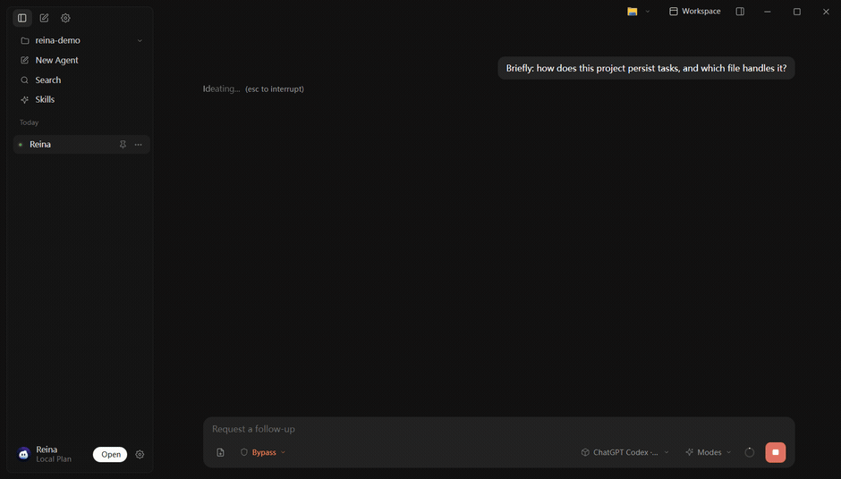

Workspace context
围绕你的项目、文件与任务组织连续对话，理解的是整个工作区，而不只是单个文件。
一个住在你电脑里的通用 AI agent。它理解你的整个工作区，组织信息、拆解目标，持续把任务推进到完成。
已读取本地 14 个文件。整理出 3 项待办，正在推进第一项——重构数据层。

真实使用演示 · 理解工作区，持续推进任务
多数 AI 助手只做通用编码。Reina 把安全审计当一等公民——内置 gadget catalog、自动挖掘利用链、危险命令拦截与路径沙箱。
find_java_chains 自动挖掘利用链
5 维能力权限 · 危险命令拦截 · 路径沙箱
Claude Code 是依托 Anthropic 生态的云端终端工具；Reina 跑在你自己选的模型上、数据不出本机，并为安全审计专门打磨。下面是不带滤镜、可对照源码的硬数据。
终端 CLI + IDE 扩展，第一方 Claude 模型驱动，背靠庞大的插件与 GitHub Actions 生态。通用编码 agent。
原生桌面 Agent，数据 / key / 模型全程留本机，并把安全审计做成一等公民。
find_java_chains：自动挖掘利用链（最多 100 条）客观地说：Claude Code 生态更成熟——第一方 Claude、IDE 扩展、GitHub Actions、深厚插件社区，做通用编码触达最广。Reina 不拼生态广度，而是把数据掌控与安全审计做深做专。表中 Reina 列数据均经自有源码核实；Claude Code 列只取其官方公开口径。
围绕你的项目持续工作，而不只是回答一个个孤立的问题。
围绕你的项目、文件与任务组织连续对话，理解的是整个工作区，而不只是单个文件。
不止于回答——它会拆解目标、持续推进，并在你需要时主动建议下一步。
完整保留任务历史，随时暂停、随时继续，无需反复重述上下文。
自由配置你偏好的模型与 API key，不被任何单一厂商锁定。
聊天 / 工作区 / 设置 各自独立呈现，贴合本地工作流，而非困在浏览器标签里。
完全跑在你自己的电脑上，工作区内容默认留在本地，省心、可控。
几分钟内把 Reina 接入你的项目。
把 Reina 指向本地的一个项目目录，它将围绕这里展开理解与协作。
在设置里选择你偏好的模型，填入对应的 key，几秒钟就绪。
下达一个目标，Reina 持续推进任务，并在你需要时建议下一步。
免费。下载即用，使用时填入你自己的模型 API key 即可。
不会。工作区内容与 API key 默认都留在本机，Reina 只调用你自己配置的模型端点，不经过我们的服务器。
任意 provider：OpenAI、Anthropic、OpenAI 兼容端点（DeepSeek / Kimi / 本地模型），以及 ChatGPT 订阅——都用你自己的 key。
Windows 与 macOS（macOS 为 Apple Silicon 版本）。
本地优先、模型自由，并为安全审计专门打磨——具体差异见上方对比表。
不开源，Reina 是闭源的桌面应用。但你的工作区数据与 API key 默认不出本机、不经过我们的服务器。
免费 · 本地优先 · 自带模型 · Windows & macOS
Download Reina